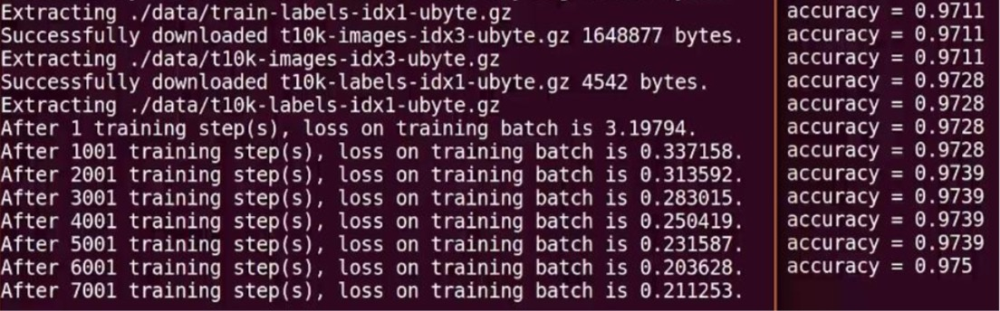

实现手写体 mnist 数据集的识别任务，共分为三个模块文件，分别是描述网络结
构的前向传播过程文件(mnist_forward.py)、描述网络参数优化方法的反向传 播过程文件(mnist_backward.py)、验证模型准确率的测试过程文件 (mnist_test.py)。
前向传播过程（mnist_forward.py）:
在前向传播过程中，需要定义网络模型输入层个数、隐藏层节点数、输出层个数， 定义网络参数 w、偏置 b，定义由输入到输出的神经网络架构。
实现手写体 mnist 数据集的识别任务前向传播过程如下:
1 | import tensorflow as tf |
由上述代码可知，在前向传播过程中，规定网络输入结点为 784 个(代表每张输 入图片的像素个数)，隐藏层节点 500 个，输出节点 10 个(表示输出为数字 0-9 的十分类)。由输入层到隐藏层的参数 w1 形状为[784,500]，由隐藏层到输出层 的参数 w2 形状为[500,10]，参数满足截断正态分布，并使用正则化，将每个参数的正则化损失加到总损失中。由输入层到隐藏层的偏置 b1 形状为长度为 500 的一维数组，由隐藏层到输出层的偏置 b2 形状为长度为 10 的一维数组，初始化 值为全 0。前向传播结构第一层为输入 x 与参数 w1 矩阵相乘加上偏置 b1，再经 过 relu 函数，得到隐藏层输出 y1。前向传播结构第二层为隐藏层输出 y1 与参 数 w2 矩阵相乘加上偏置 b2，得到输出 y。由于输出 y 要经过 softmax 函数，使 其符合概率分布，故输出 y 不经过 relu 函数。
反向传播过程（mnist_backward.py）:
反向传播过程实现利用训练数据集对神经网络模型训练，通过降低损失函数值， 实现网络模型参数的优化，从而得到准确率高且泛化能力强的神经网络模型。 实现手写体 mnist 数据集的识别任务反向传播过程如下:
1 | # coding:utf-8 |
由上述代码可知，在反向传播过程中，首先引入 tensorflow、input_data、前向 传播 mnist_forward 和 os 模块，定义每轮喂入神经网络的图片数、初始学习率、 学习率衰减率、正则化系数、训练轮数、模型保存路径以及模型保存名称等相关 信息。在反向传播函数 backword 中，首先读入 mnist，用 placeholder 给训练 数据 x 和标签 y_占位，调用 mnist_forward 文件中的前向传播过程 forword()函 数，并设置正则化，计算训练数据集上的预测结果 y，并给当前计算轮数计数器 赋值，设定为不可训练类型。接着，调用包含所有参数正则化损失的损失函数 loss，并设定指数衰减学习率 learning_rate。然后，使用梯度衰减算法对模型 优化，降低损失函数，并定义参数的滑动平均。最后，在 with 结构中，实现所 有参数初始化，每次喂入 batch_size 组(即 200 组)训练数据和对应标签，循 环迭代 steps 轮，并每隔 1000 轮打印出一次损失函数值信息，并将当前会话加 载到指定路径。最后，通过主函数 main()，加载指定路径下的训练数据集，并调 用规定的 backward()函数训练模型。
测试过程文件(mnist_test.py)
当训练完模型后，给神经网络模型输入测试集验证网络的准确性和泛化性。注意， 所用的测试集和训练集是相互独立的。
实现手写体 mnist 数据集的识别任务测试传播过程如下:
1 | # coding:utf-8 |
在上述代码中，首先需要引入 time 模块、tensorflow、input_data、前向传播 mnist_forward、反向传播 mnist_backward 模块和 os 模块，并规定程序 5 秒的 循环间隔时间。接着，定义测试函数 test(),读入 mnist 数据集，利用 tf.Graph() 复现之前定义的计算图，利用 placeholder 给训练数据 x 和标签 y_占位，调用 mnist_forward 文件中的前向传播过程 forword()函数，计算训练数据集上的预 测结果 y。接着，实例化具有滑动平均的 saver 对象，从而在会话被加载时模型 中的所有参数被赋值为各自的滑动平均值，增强模型的稳定性，然后计算模型在 测试集上的准确率。在 with 结构中，加载指定路径下的 ckpt，若模型存在，则 加载出模型到当前对话，在测试数据集上进行准确率验证，并打印出当前轮数下 的准确率，若模型不存在，则打印出模型不存在的提示，从而 test()函数完成。 通过主函数 main()，加载指定路径下的测试数据集，并调用规定的 test 函数， 进行模型在测试集上的准确率验证。
运行以上三个文件，可得到手写体 mnist 数据集的识别任务的运行结果:

从终端显示的运行结果可以看出，随着训练轮数的增加，网络模型的损失函数
值在不断降低，并且在测试集上的准确率在不断提升，有较好的泛化能力。